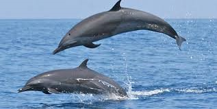

|

|
Ganges river dolphins once lived in the Ganges-Brahmaputra-Meghna river systems of Nepal, India, and Bangladesh.
But the species is extinct from most. The Ganges river dolphin can only live in freshwater and is essentially blind.
These dolphins are hunted by people in the Brahmaputra River for meat and by fishermen in the Ganges River for oil.
River dolphins trapped in dams are the target of poachers specially in the summers when the waters begin to dry and
also are littered by humans. |